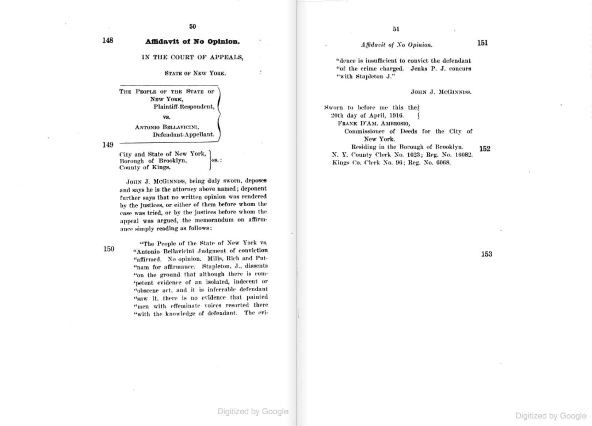

police officers dressing in women's clothing for a stakeout, 1960.
degeneracy – disorderly conduct
the people of new york v. antonio bellavicini
on "that" street. charles duluth, 1932
Antonio Bellavicini was a bartender working in the saloon at 32 Sands St., a hotel located on the infamous Sands Street known for its gay cruising and general lawlessness. During his shift one night, he was drawn into a raid enacted by a disguised police officer and was arrested. His crime was not soliciting the undercover officer, as was the case for the other five arrested in the raid, but simply for being there for that solicitation. As the courts would go on to argue, he was being prosecuted for implicitly allowing homosexual activity to take place.
Above is the appeal made by Bellavicini in an attempt to overturn his conviction and sentencing (which was to three months in the workhouse). This attempt was ultimately unsuccessful, as the court ruled 3-2 that his conviction would stand. What he was convicted for was violation of §1146 of the Penal Law: "Whosoever shall keep or maintain a house of ill-fame or assignation of any description or a place for the encouragement or practice by persons of lewdness, fornication, unlawful sexual intercourse or for any other indecent or disorderly act or obscene purpose therein or any place of public resort at which the decency, peace or comfort of a neighborhood is disturbed, shall be guilty of a misdemeanor." Essentially, having run a disorderly establishment that housed lewd individuals and disturbed the decency of the neighborhood was a prosecutable offense.
Bellavicini's defense did not concern the actual actions of the lewd persons at 32 Sands St., but rather that no matter their actions, they had not reached any level where he could reasonably have been expected to notice or take action. The presiding Justice's response? "But he had eyes and could see."
However, while it was homosexuals that the NYPD was interested in policing, the language of the law wasn't quite there. "The problem was this: As 'homosexuals' were beginning to be understood as a deviant class, their very existence needed to be policed. But laws like disorderly conduct were designed to be brought to bear against activities, not identities. This was why the police made such a big deal about powder puffs and make-up: Because wearing clothing of the 'opposite' gender was an illegal, arrest-able activity." (Hugh Ryan, Inventing, and Policing, the Homosexual in Early 20th c. NYC) There were certainly laws against degeneracy -- but what of the degenerates?
rae bourbon enters court on charge of impersonating a woman, 1956
two queens in a holding cell, 1946
Laws of New York, 1923; Article 70; Disorderly Conduct.
Section 720. Disorderly conduct on public conveyances.
722. Disorderly conduct. In cities of one million inhabitants or over any person who, with intent to provoke a breach of the peace, or whereby a breach of the peace may be occasioned, commits any of the following acts shall be deemed to have committed the offense of disorderly conduct:
1. Uses offensive, disorderly, threatening, abusive or insulting language, conduct or behavior;
2. Acts in such a manner as to annoy, disturb, interfere with, obstruct, or be offensive to others;
3. Congregates with others on a public street and refuses to move on when ordered by the police;
4. By his actions causes a crowd to collect, except when lawfully addressing such a crowd;
5. Shouts or makes a noise either outside or inside a building during the night time to the annoyance or disturbance of any considerable number of persons;
6. Interferes with any person in any place by jostling against such person or unnecessarily crowding him or by placing a hand in the proximity of such person’s pocket, pocketbook or handbag;
7. Stations himself on the public streets or follows pedestrians for the purpose of soliciting alms, or who solicits alms on the public streets unlawfully;
8. Frequents or loiters about any public place soliciting men for the purpose of committing a crime against nature or other lewdness;
9. Causes a disturbance in any street car, railroad car, omnibus or other public conveyance, by running through it, climbing through windows or upon the seats, or otherwise annoying passengers or employees therein;
10. Stands on sidewalks or street corners and makes insulting remarks to or about passing pedestrians or annoys such pedestrians;
723. Punishment for disorderly conduct. The offense of disorderly conduct is punishable as follows:
1. By imprisonment in a county jail or workhouse for a term not exceeding six months, or by a fine not exceeding fifty dollars, or by both;
2. By placing on probation for a term not to exceed two years.
New York State took its first big step towards criminalizing public homosexuality (separate from criminalizing sodomy or crossdressing) with the laws of 1923. They included a disorderly conduct law that -- really for the first time in New York State history -- criminalized simply being gay in public. This was a clause against soliciting men, violation of which was usually referred to by police as simply "degeneracy." Because this law passed during prohibition, it was not initually used against gay bars (as there were none -- or at least it was the case that straight speakeasies were just as illegal) but instead was used to criminalize cruising. However, this marked an important milestone for NYPD tactics: gone were the days where homosexuality had to be roundaboutly targeted as acts of sex perversion. Now, all they had to do was point out homosexuals (an identity class and not an action): not people performing perversion, but (inherent nature) sex perverts themselves.
liquor licenses
the new york state liquor authority in the aftermath of prohibition
police officers dressing in women's clothing for a stakeout, 1960.
Alcoholic Beverage Control Law
§106. Provisions governing licensees to sell at retail for consumption on the premises
6. No person licensed to sell alcoholic beverages shall suffer or permit such premises to become disorderly.
In 1933, following the full repeal of Prohibition and the passage of the 21st Amendment, each state was left to navigate the uncertain waters of legal alcohol on its own. Shortly following the end of Prohibition, New York State passed the Alcohol Beverage Control Law and formed the State Liquor Authority, which was tasked with the regulation, rules, and enforcements of liquor licenses accross the state. With that newfound authority, the SLA used its power to persecute and shut down gay bars (or even bars where it was suspected that homosexual activities had taken place) for the next few decades under a 'disorderly conduct' provision remarkably similar to New York's 1923 disorderly conduct laws. An establishment's liquor license could be revoked if it was found to be running a 'disorderly house' - and there was nothing more disorderly to the SLA than a gathering of homosexuals.
F & C Holding Corp. v. New York State Liquor Authority
... Patrolman Stephen C. Chapwick, of the 4th Precinct, was assigned to plainclothes duty on the evening of November 12, 1965 when he entered the licensed premises known as Julius' Restaurant at 159 West 10th Street, Greenwich Village at 11:10 PM. There were about seventy-five to eighty people in the premises (44). There were about thirty males at the bar; seated at the tables in the rear of the premises were about ten females, with the remainder of the patrons being male. Of those males at the bar, Officer Chapwick observed about six who spoke in high, shrill voices, wore tight clothes and exhibited limp wrists. They were calling each other "honey" and "deary" (45). These latter patrons walked in a mincing gait, wiggling their hips as they walked to the juke box or to the rear of the premises (45); they walked with cigarettes in their hands in an effeminate manner, "waiving (sic) their wrists very loosely and limply" (46)...
Julius' (here arraigned) was a longstanding and popular Greenwich Village gay bar, as much as any gay bars in the 60s could have been considered 'popular'. Notable in the history of gay rights, only six months after the incident described in this court case, it would be the site of a 'Sip-In'. This was a protest organized in 1966 by the Mattachine Society, in which they went to several bars and restaurants to attempt ordering drinks after making it clear that they were gay. On the left is a picture taken at that Sip-In -- the bartender covering the mens' glasses, unwilling to serve public homosexuals following a recent police raid.
"Public" was the key word here: the illegal homosexual was the public one, the one who was not only engaging in deviance but visibly deviant himself. In his testimony Patrolman Chapwick describes men with shrill voices, limp wrists, and mincing walks: gender non-conformity is, here, an affront to the public space. The question that the SLA and NYPD wrestled with was what exactly constitutes the (prosecutable) homosexual? Was it his actions [of sexual deviance]? His very being [as a sexual deviant]?
This was especially important when it came to the liability of the establishment itself for allowing disorderly (homosexual) conduct.
refusal of service at julius' bar. fred mcdarrah (getty images), 1966.
Was the bartender, for instance, legally liable for permitting disorderly conduct if he served a drink to a closeted man? What if that man was instead a queen, and the bartender simply unobservant? How mincing did his walk have to be and how limp his wrists before he should be denied service?
...He [Chapwick] admitted that he did not see any overt acts of homosexuality, such as touching of private parts, performed by those persons whom he had described as having limp wrists and walking in a minceful gait (52)...
...In response to questioning by the hearing officer, Patrolman Chapwick stated that he had been in other bars before, and that in his opinion, there were "fags" at the bar in Julius', although the appearance of the fags in Julius' was a little different than those in other bars (60)...
...Lohmeyer [an employee of Julius'] further testified that he would not serve a homosexual if he knew a person to be one, but he could not determine if the person was a homosexual (72)...
Here, Patrolman Chapwick admits on the record that he did not see any men performing homosexuality. Rather, he saw homosexuals -- and that was enough. Disorderly conduct had transformed from overt homosexuality at bars to an act of being: the homosexual himself was by nature a disorder. The very suspicion that a man liked men was enough to transform him from a citizen into a disorderly being, but the question remained of where exactly to draw the line. As seen in the following case (Beeshos v. SLA), there was also a certain reciprocal nature of the relationship between homosexuality and the homosexual: the behavior, in courts of law, in turn also created the expression.
The Beeshos Restaurant, Inc. v. New York State Liquor Authority
...Bradley observed "approximately 40 to 50" male patrons in the premises (31). About "ten to 15 of them were wearing pancake makeup, eyebrow pencil and mascara and perfume ... They were all dressed in tight pants, bulky knit sweaters and velour shirts. Many of the patrons had effeminate characteristics, such as short mincing steps ... limp wrists ... effeminate speech (32)...
... Bradley testified that the man at the door approached him as he was talking to Campanaro, and said, "I see you met the queen of the place ... Don't worry. You will have a good time with him" (31).
A little later, "suddenly all the lights in the premises went on", and the "man at the door ... came over to us", and warned them against talking to strangers because "there were cops in the place" (28). Bradley observed police officers in the premises (29). After about 30 to 45 minutes, "the plainclothesmen left and they turned the lights back down again" (28)...
The case of Beeshos v. SLA is a similar story to the previous case of Julius' (unsurprising, as the SLA hardly had to switch up their tactics to enjoy great success in closing bars following police raids). A plainclothes officer entered Beeshos Restaurant, and sat at the bar where he made the aquaintance of William Campanaro, a (gay) patron of Beeshos. According to Officer Bradley, following some conversation, "[Campanaro] asked me if I had an apartment in the city which I replied that I did. He stated to me he lived in the Y.M.C.A., I believe, on 67th Street. He also stated to me that he would like to go to my apartment with me and spend the remainder of the night where we would have sex and anything else we wanted. I stated, 'What do you mean?' He said, 'Don't worry. Anything you want. I will suck your cock and fuck you in the ass.' I agreed. I said, 'Let's have one more drink before we leave,' not wanting to arouse any suspicion or anything." Afterwards, Officer Bradley left with Campanaro and walked one block south, at which time he identified himself as a police officer and placed Campanaro under arrest.
jeri ryan and irene paston being fingerprinted at a city hall police station after being caught making love to two men in a parked car, 1944
jeri ryan being fingerprinted by c. l. knapp, 1944
... Cross-examination of Police Officer Bradley disclosed no discrepancies in his original testimony, and disclosed the following additional facts: That Campanaro "had pancake makeup on and perfume on" (47); that "when Campanaro got up to go to the bathroom, he walked into the ladies room" (39)...
... Camille Quintiliani testified that she is secretary of the licensee corporation (118) ... that she did not see any patron wearing makeup, mascara or perfume, nor did she see patrons using mincing steps, limp wrists or effeminate voices (124)...
... Arthur Sanders testified that he was the bartender on duty February 3, 1966 ... that he did not see male patrons wearing mascara, makeup or perfume, nor were they using mincing steps, limp wrists (109), or effeminate voices...
The 'signs of homosexuality' that Officer Bradley noticed in the men of Beeshos materialized following Campanaro's solicitation: suddenly, every man in there could be seen to droop his wrists as he walked, to be wearing 'pancake makeup' and to smell of women's perfumes. Witnesses testified that no such behaviors had been exhibited - but gender nonconformity itself had become a legal borderland through which law and prosecution was understood for gay communities.
Certainly gay bars had their share of queens (who could be, depending on the individual, anywhere from crossdressers to drag queens to trans women - see above) but the presence or non-presence of queens in the bar was not the issue at hand: rather it was the idea of their presence. Julius' for one had a reputation as more of a staid, upper-middle class white gay male bar - but that didn't actually matter. To the NYPD, perverts begat perversion begat perverts like an ouroboros eating its own tail: gender nonconformity was something that was created and applied even on those who were closest to assimilation.
On the one hand, if an individual seemed queer enough to the untrained eye, that visible deviance in turn created the assumption of homosexual actions; on the other, homosexual actions (or intent to commit) created a palpable aura, a visible difference that could transform a man from closeted and unclockable to a "fairy." Suspicion was just as damning as conviction.
the mob
law and order & the 1964 world fair
GET THE MAFIA AND THE COPS OUT OF GAY BARS
Flyer distributed by the Homophile Youth Movement, summer 1969
The nights of Friday, June 27, 1969 and Saturday, June 28, 1969 will go down in history as the first time that thousands of Homosexual men and women went out into the streets to protest the intolerable situation which has existed in New York City for many years --- namely, the Mafia (or syndicate) control of this of this city's Gay bars in collusion with certain elements in the Police Dept. of the City of New York. The demonstrations were triggered by a Police raid on the Stonewall Inn late Friday night, June 27th. The purported reason for the raid was the Stonewall's lack of a liquor license.- Who's 'kidding whom here? Can anybody really-believe that an operation as big as the Stonewall could continue for almost three years just a few blocks from the 6th Precinct house without having a liquor license? No! The Police have know about the Stonewall operation all along. What's happened is the presence of new "brass" in 6th Precinct which has vowed to "drive the fags out of the Village."
Many of you have noticed one of the signs which the "management" of the Stonewall has placed outside stating "Legalize Gay bars and lick the problem. Judge Kenneth Keating (a former US Senator) ruled in January, 1968 that even close dancing between Homosexuals is legal. Since that date there has been nothing legal, per se, about a Gay bar. What is illegal about New York City's Gay bars today is the Mafia (or syndicate) stranglehold on them. Legitimate Gay businessmen are afraid to open decent Gay bars with a healthy social atmosphere (as opposed to the hell-hole atmosphere of places typified by the Stonewall) because of fear of pressure from the unholy alliance of the Mafia and elements in the Police Dept. who accept payoffs and protect the Mafia monopoly.
We at the Homophile Youth Movement (HYMN) believe that the only way this monopoly can be broken is through the action of Homosexual men and women themselves. We obviously cannot rely on the various agencies of government who for years have known about this situation but who have refused to do anything about it. Therefore we urge the following:
1) That Gay businessmen step forward and open Gay bars that will be run legally with competitive pricing and a healthy social atmosphere.
2) That Homosexual men and women boycott places like the Stonewall. The only way, it seems, that we can get the criminal elements out of gay bars is simply to make it unprofitable for them.
3) That the Homosexual citizens of New York City, and concerned Heterosexuals, write to mayor Lindsay demanding a thorough investigation and effective action to correct this intolerable situation.
Coming out of Prohibition-era speakeasies, the Mafia in New York had a natural advantage in the business. The newly-legal status of alcohol brought forth its share of legitimate bars, but the foothold that the Five Families (the Bonnano, Colombo, Gambino, Genovese, and Lucchese families) continued to have in New York City nightlife could not be underestimated. This was a certain expected level of involvement in seedy dive bars, fronts for trafficking and drug trade -- but another important profit point for the mob was their total stranglehold on queer nightlife. Gay bars were involved with the mob as a matter of course: either they were owned directly by a mobster (as was the case with Stonewall and the entirety of the Bird Circuit) or paid them off. And if they didn't pay the mob, the consequences were simple: the NYPD (and the SLA) would come knocking.
The mob and the NYPD had a certain relationship -- which wasn't to say that mob-owned bars didn't get raided, but rather that they received some preferential treatment. A mob-owned bar who maintained good relations with the police (i.e. bribes) would receive advance notice of a raid, or even be able to have the NYPD raid the establishment in the afternoon (when there were minimal customers) to have the bar up and running again by nighttime. "Fat Tony" Lauria, who owned and operated the Stonewall Inn, paid the NYPD $1,200 a week to keep them off his back.
The mob may have been the operator and leverage point of gay nightlife in New York, but they were hardly benevolent angels. The Genovese family owned most of the bars in the Village and by virtue of that monopoly was able to extort the gay community for everything it had. Fat Tony was with the Genovese, and ran the Stonewall Inn as a front for caporegime "Matty the Horse" Iannello -- and the Stonewall was a prime example of the profit-driven tactics they would use on Village nightlife. Bars would serve watered-down bootleg liquor at premium prices in dirty glasses (at the Stonewall, bartenders didn't even have access to running water behind the bar). But despite the conditions the mob operated gay bars in, patrons kept coming back and coming back because there really was nowhere else to go.
Any bar that tried to operate outside of the jurisdiction of the mafia would be in trouble with the mob itself, but perhaps more key would be the effects that loss of patronage had on the NYPD. Without the influence of the mob there was nothing to protect them from the raids and entrapment that were nearly routine throughout the era. The fervor that the NYPD had to harrass and prosecute gay bars and patrons wasn't necessarily something that came out of homophobia, but rather political pressure. Particularly in the early 60s, the NYPD's aggressive crackdown on queer nightlife came directly from the office of Mayor Wagner ahead of the 1964 World Fair.
Wagner's crackdown on homosexuality was very directly driven by the spectre of the World Fair: he wanted to make New York City respectable with the world's eyes on it, and a major part of that was making sure that the world didn't see any disreputable characters out in public. A tourist wandering through lower Manhattan or Times Square could easily wander into (god forbid) a gay bar -- and that couldn't be allowed to happen. The campaign against gay bars reached its height in 1963 along with similar crackdowns against prostitution and homelessness -- getting rid of any public disorder in order to create a clean, sanitized New York perfect to host the World Fair.
I did come to New York, only to find that Mayor Wagner had this crackdown on the gay bars. Everything was closed up when I got here. The only gay bar open was the Cherry Lane. There were a few others that operated very surreptitiously. In 1964 for the World's Fair they started entrapping people as much as they could to clean up the homeless, the prostitutes, and the homosexuals. A lot of people were caught in that dragnet. I remember going to bars and some of the undercover policemen got to be known because they would always be in the bars and some people got to know who they were. I remember a couple of instances where we would form a circle around them and we'd spread the word to everybody in the bar. Sometimes we'd even follow them from bar to bar.
Philip Bockman (from David Carter's Stonewall: The Riots That Sparked The Gay Revolution)
The New York Times. Monday, October 5 1964.
The three heads of the beast, then, were as follows: Wagner and his NYPD; the mob; and the SLA. The Wagner-sponsored NYPD crackdown went hand in hand with a concurrent investigation into corruption inside of the State Liquor Authority, causing nearly every even semi-legitimate gay bar to lose its license (with the sole exception of the Cherry Lane, which survived until 1966).
The mob sailed above and beneath the turmoil with a number of strategies: as previously mentioned, a cordial relationship with the NYPD and SLA was essential, particularly with some cash to grease the wheels of justice and encourage the city to turn a blind eye. However, as corruption scandals in the SLA became more public, the mob had to resort to other tactics such as registering bars as 'private bottle clubs' where patrons were (as far as the law was concerned) meant to bring their own liquor so that the establishment could operate without a liquor license -- Fat Tony used this tactic to run the Stonewall. More often than not, though, "[mafia-owned] bars began to operate only until they were raided, at which time they would pick up the entire operation, bar, employees, clientele and all, and move to another place in the same neighborhood, with the licenses in another name." (Dick Leitsch of the Mattachine Society, from from David Carter's Stonewall: The Riots That Sparked The Gay Revolution) The only outfit with the organization and the unscrupulous nature necessary to keep gay nightlife active in the Village was the mob.
This plunged gay bars and their patrons into a murky legal borderland almost separate from the question of queer identity (and identification). The only legal bar was an orderly one -- i.e. without homosexuals -- and so a homosexual bar was then an illegal establishment in the eyes of the law. The law, through that persecution, plunged the status of the gay bar into further illegality by making mob ownership the only path to resilience when it came to queer gathering spaces. Though homosexual identity wasn't necessarily criminalized, being a homosexual, in every sense of moving through the world, was. The homosexual found himself in an uneasy equilibrium, legal in private, illegal in public, with a public identity (at least in the bars) inextricably tied not just with generalized 'degeneracy' but with drugs, prostitution, and organized crime.
clockability
sexual and racial politics of the 1960s gay scene
A note on clockability: to be clockable is in some measure to be perceived. Being recognized, in public, as transgender -- by someone inside or outside the community. Being 'unclockable' is the same as 'passing' -- passing for cisgender, passing as a woman. Here I use 'clockable' in a broad sense, emphasizing the political visibility around queer difference in all its forms.
Crystal LaBeija, founder and Mother of the house of LaBeija, pictured left.
Denied access to most of the segregated restairants and speakeasies white gay men patronized elsewhere in New York, [black gay men] built an extensive gay world in their own community, which in many respects surpassed the Village's in scope, visibility, and boldness. The Village's most flamboyant homosexuals wore long hair; Harlem's wore long dresses. The Village had cafes where poets read their verse and drag queens performed; Harlem had speakeasies where men danced together and drag queens were regular customers.
George Chauncey, Gay New York.
Much of the murky nature of queer identity and criminalization for gay men in 1960s Greenwich Village came from the fact that you couldn't necessarily tell, at a glance, if an individual was gay. He had to do something, or say something, or be somewhere that recontextualized him as a queer in the eye of the beholder. This was the case for many "straight-acting" bars like Julius', where men operated under the pretexts of plausible deniability. These straight-acting men tended to be wealthier, whiter, and cisgender: despite their persecution by the state, they were a relatively privileged class for whom gender nonconformity existed more as a boogeyman, a spectre of criminalization that might at any moment be applied to them. They were (until they said the wrong thing, walked the wrong way, entered the wrong space) unclockable.
There was, of course, another side to that coin. It's impossible to discuss clockability without discussing class and race, but in particular sexual and racial politics came tightly entertwined in New York's 1960s gay scene. Segregation drew lines between one class of homosexuals (as previously mentioned broadly wealthier, whiter, perhaps 'fags' but not 'fairies') and the other (predominantly lower-class, often sex workers, often transgender, often Black or latino). This "other" type of homosexual could be considered as the Other for closeted or straight-acting gay men by virtue of their clockability. They would not -- and could not -- hide their queerness, nor was it something that ebbed and flowed with spatial relation. Even within New York's transgender community, though, it tended to splinter along racial and geographical boundaries. The Village had its share of drag bars and competition -- but Harlem had balls.
Records from the Committee of Fourteen, 1928.
Ballroom culture in Harlem can be traced through the lineage of two different concepts: 'balls' and 'houses'. The ball, firstly, was the event. It had its roots in the Harlem Renaissance, in multi-racial annual masquerade balls that were initially mostly organized by white gay men. They featured "straight" dancing couples who performed heterosexuality only on the most superficial level -- the 'men' of the ball were straight men, masculine gay men, and butch women; the 'women' were cisgender straight women, trans women, and crossdressers. These balls featured a pageant element as well, with the "parade of the fairies" (contestants in drag sashaying through the auditorium) heralding the beginning of the night's costume competition.
Over the next decades, drag balls evolved from masquerade parties into gay beauty competitions that bear more resemblance to the drag scene and ballroom culture we are familiar with today. However, as the drag scene grew, uneven racial dynamics within the scene became more pronounced. Black queens participating in white pageants found that, although they could participate, they could almost never win: judges universally favored whiter and less talented counterparts.
In response, Black queens began to stage their own balls, forming a Black drag circuit in Harlem beginning in the early 1960s. Crystal LaBeija was one of the queens instrumental in forming that circuit, as a legendary performer who had experienced her share of snubs from the white drag scene. Her most important contribution to the ballroom, however, was not the balls she hosted but the house she formed: the very first drag house, the house of LaBeija in 1972.
The budding Black drag circuit was not without its unique challenges: while they may not have been quite so closely watched by the NYPD by virtue of not being a center of tourism the way that the Village was, balls were dangerous in their own way. The newly-established drag balls of the 60s coincided with a rise in Black nationalist politics in and around Harlem which often came hand in hand with rigid notions of Black masculinity (which drag queens were unequivocally exluded from). White drag queens certainly faced similar prejudice from their own families, but what made family more of a prevalent issue in Harlem was the relative demographics of the two scenes. The Village predominantly catered to independent men, living on their own, often transplants from elsewhere; meanwhile Harlem, due to segregation within the city, was a melting pot of individuals, family units, and queer adolescents coming into themselves for the first time. The danger and fear of social ostracization caused a marginalization completely different to what could be observed in the Village: here, it manifested as a literal temporal ostracization. Balls were often held at 4AM so that performers wouldn't risk encountering community members on their way to and from, and so that 'working girls' (transgender sex workers) would be able to attend.
Queer marginalized youths nevertheless ended up on the street for a variety of reasons. Homeless, penniless, and socially exiled from their straight communities, they had no biological family to turn to that would accept them as they were. Houses filled that gap. They were somewhere in between queer orphanages and pageant competition groups, with infrastructure built around kinship and community. Each house had a Mother and a Father (either could be of any gender) as its leadership, and 'children' as its general membership. This creation of familial lineage became extremely important in the ballroom scene, as the community rallied around itself to provide structure for people who often had nowhere else to go.
A discussion of the gay bar is not complete without the context of the ballroom and the street: even as queer spatiality transformed men into fairies through cultural association and context, the interior (bar) retained an inextricable relationship with the exterior (the street) -- queers creating queerness creating queers ad infinitum. Policing of homosexuality involved weaponizing that creation of queerness, whether it be for the purposes of entrapment or 'proving' a man a homosexual. At the same time, transgender New Yorkers experienced that policing of queerness very differently than cisgender gay New Yorkers. The question of whether or not you were clockable ultimately redefined your relationship to queer space: whether it had the power to define and recontextualize you, or whether by your presence it was created.
click for bibliography